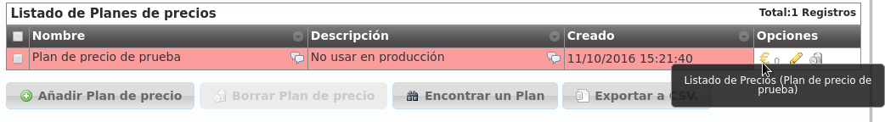
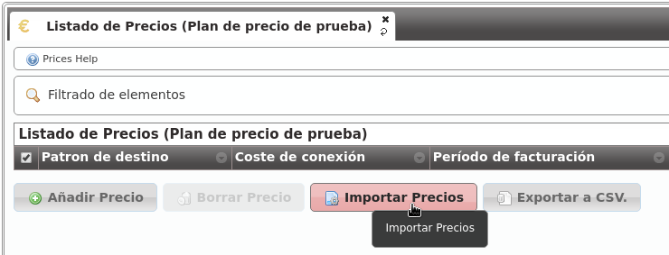

Planes de precio¶
En la sección Sin plan de precio, no hay llamada se hacía una introducción bastante completa sobre el proceso manual de creación de un plan de precios y los conceptos más importantes:
Un plan de precios agrupa un listado de patrones de precio (prefijos de llamada) con sus detalles de precio:
Precio por minuto
Establecimiento de llamada
Facturación por segundos / minutos /etc.
Un plan de precios se asocia a una empresa concreta, indicando el período de validez de dicho plan.
Una empresa podía tener varios planes de precios en un momento concreto para una llamada concreta.
En este último caso, el coste de la llamada se calcularía utilizando el plan de precio de menor métrica.
Creación manual¶
La creación manual de un plan de precio implicaba la creación previa de un patrón de precio.
En ese momento, es posible que el futuro administrador de marca se haya dado cuenta de la titánica tarea que implicaría crear miles de patrones de precio (254 países por las distintas redes móviles, fijos, numeraciones especiales, etc.) para luego poder agruparlos en un plan de precios.
Es por ello que el proceso de creación de planes y patrones de precio se realiza partiendo de un CSV.
Importación vía CSV¶
El primer paso es crear un plan de precios vacío sobre el que importar nuestros precios (sección Configuración de marca > Planes de precio):

Accedemos al listado (vacío) del plan de precio que acabamos de crear:
El botón clave para este proceso de importación masiva es el siguiente:
Una vez elegido el archivo a importar, se nos presenta la siguiente ventana:

En esta ventana podríamos seleccionar qué contiene cada columna, en caso de no haber creado el CSV en el formato recomendado. Del mismo modo, se nos ofrece la posibilidad de ignorar la primera línea, en caso de que incluya los nombres de las columnas en lugar de datos.
Consejo
El proceso de importación se realiza en segundo plano, permitiendo al administrador de marca seguir configurando otros aspectos de la plataforma mientras se completa.
Formato CSV¶
A pesar de que la ventana anterior nos permite importar archivos CSV en distintos formatos, lo mejor es importar un archivo en el formato adecuado para simplicar este proceso.
El formato del archivo CSV está explicado en la propia sección de ayuda contextual, que incluye un enlace para poder descargar un archivo de ejemplo:

El orden de las columnas debería de ser:
Nombre del patrón de precio
Descripción del patrón de precio
Prefijo
Precio por minuto
Precio de establecimiento
Período de facturación
Nota
Se recomienda entrecomillar con comillas dobles las entradas alfanuméricas, aunque no es necesario para entradas con una única palabra (o entradas sin símbolos raros). Si contienen coma, es OBLIGATORIO entrecomillarlos.
Error
Los números decimales tienen que usar el punto como separador decimal.
Nota
Las entradas numéricas se pueden entrecomillar con comillas dobles, pero no es obligatorio.
Importante
El sistema de importación creará los patrones de precio que sean necesarios. Si ya existe un patrón de precios con ese prefijo, no se creará, simplemente se vinculará.
Advertencia
El precio de la llamada sera incrementado cada periodo de facturacion.
Si se pone a 1, implica una tarificación por segundos y cada segundo implicará un coste que será el precio por minuto dividido entre 60.
Si se pone a 60, implica una tarificación por minutos y cada minuto implicará un coste que será el precio por minuto.
Una vez completada la importación, solo faltaría asociar el nuevo plan de precios a las empresas que queramos, siguiendo el procedimiento explicado en el bloque anterior.